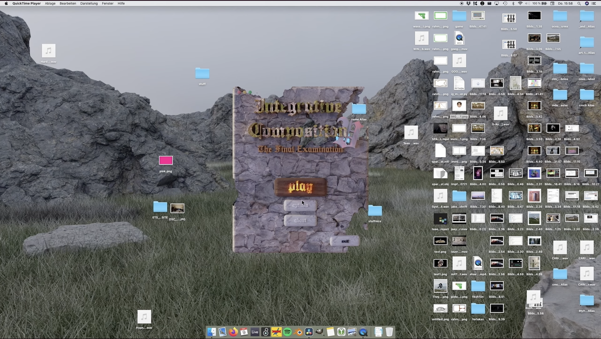

17/02/2022AudioVideo
Integrative Composition V: The Final Examination

„Integrative Composition V: The Final Examination“ ist ein 1 stündiges Multimedia Stück das im Rahmen meines Abschlusskonzertes an der Folkwang UdK aufgeführt wurde. Das Setup besteht aus 6 Beamern, 13 Lautsprechern und einem Player Piano (ein selbstspielendes Klavier). Dieses Stück untersucht game Strukturen oder an game culture angegliederte Strukturen als Stückform.
Es beginnt als gewöhnliches Ein-Kanal-Video-Stück, entpuppt sich jedoch als Bildschirmaufnahme und entwickelt sich zu einem scheinbaren Gameplay, das im Laufe der Aufführung zu einer kommentierten Version (Let's Play) wird. Von einer roomtour bis hin zu World of Warcraft-Raids tritt das Stück immer wieder in einen Dialog mit dem Raum, in dem es aufgeführt wird. Wendungen und Aktionen im "Spiel" lösen nicht-virtuelle Aktionen aus. Das Bühnenlicht wird ingame ein- und ausgeschaltet, die 6 Beamer werden „freigeschaltet" und das Player Piano wird von einer virtuellen Maschine gesteuert. So bekommen die Dinge einen anderen Kontext und werden mit einer neuen Logik versehen. Eine die es in der heutigen Zeit zu untersuchen gilt.
„As is usual with dragons, they protect their prey with their lives. Most of the time they lie on a big mountain of their treasures. Because they sometimes lie there for several decades without interruption, they grow together with some of their captured treasures.“